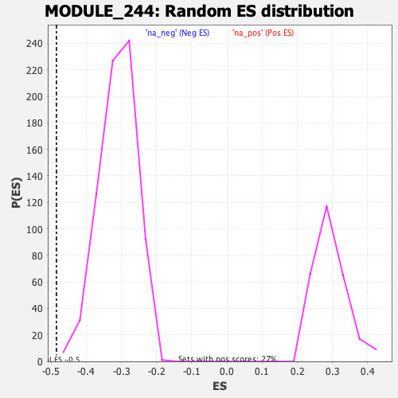

| | | Dataset | DE_genes |
| Phenotype | NoPhenotypeAvailable |
| Upregulated in class | na_neg |
| GeneSet | MODULE_244 |
| Enrichment Score (ES) | -0.4847235 |
| Normalized Enrichment Score (NES) | -1.5623963 |
| Nominal p-value | 0.0013774105 |
| FDR q-value | 0.1510793 |
| FWER p-Value | 0.832 |
Table: GSEA Results Summary
 Fig 1: Enrichment plot: MODULE_244
Fig 1: Enrichment plot: MODULE_244
Profile of the Running ES Score & Positions of GeneSet Members on the Rank Ordered List
| PROBE | GENE SYMBOL | GENE_TITLE | RANK IN GENE LIST | RANK METRIC SCORE | RUNNING ES | CORE ENRICHMENT | | 1 | NME1 | | | 392 | 2.235 | -0.0080 | No |
| 2 | POLR2K | | | 487 | 1.816 | 0.0002 | No |
| 3 | TOP2A | | | 533 | 1.653 | 0.0103 | No |
| 4 | KHSRP | | | 559 | 1.561 | 0.0210 | No |
| 5 | CDK4 | | | 608 | 1.451 | 0.0293 | No |
| 6 | ATP12A | | | 980 | 0.882 | 0.0120 | No |
| 7 | RECQL4 | | | 1319 | 0.604 | -0.0054 | No |
| 8 | ROR2 | | | 1535 | 0.502 | -0.0154 | No |
| 9 | MKI67 | | | 1563 | 0.489 | -0.0134 | No |
| 10 | PSMC4 | | | 1656 | 0.451 | -0.0158 | No |
| 11 | PCNA | | | 1925 | 0.348 | -0.0306 | No |
| 12 | KIF23 | | | 2122 | 0.291 | -0.0411 | No |
| 13 | CSNK2A1 | | | 2162 | 0.277 | -0.0415 | No |
| 14 | DDX10 | | | 2472 | 0.214 | -0.0600 | No |
| 15 | CHEK1 | | | 2498 | 0.207 | -0.0600 | No |
| 16 | XRCC5 | | | 2543 | 0.202 | -0.0613 | No |
| 17 | MTHFD1 | | | 2693 | 0.177 | -0.0696 | No |
| 18 | RFC3 | | | 2929 | 0.146 | -0.0838 | No |
| 19 | TAP2 | | | 2957 | 0.144 | -0.0844 | No |
| 20 | KIF2C | | | 3093 | 0.132 | -0.0922 | No |
| 21 | TTK | | | 3326 | 0.112 | -0.1065 | No |
| 22 | PRKCD | | | 3359 | 0.110 | -0.1077 | No |
| 23 | NEK2 | | | 3759 | 0.084 | -0.1332 | No |
| 24 | MAPK14 | | | 4156 | 0.061 | -0.1586 | No |
| 25 | STK3 | | | 4196 | 0.059 | -0.1606 | No |
| 26 | MELK | | | 4226 | 0.057 | -0.1621 | No |
| 27 | GUCY2D | | | 4345 | 0.050 | -0.1694 | No |
| 28 | PLK4 | | | 4504 | 0.041 | -0.1794 | No |
| 29 | EPHB1 | | | 4734 | 0.029 | -0.1941 | No |
| 30 | TRIP13 | | | 4856 | 0.024 | -0.2019 | No |
| 31 | POLR2J | | | 4982 | 0.017 | -0.2099 | No |
| 32 | USP14 | | | 5104 | 0.011 | -0.2177 | No |
| 33 | RAD51 | | | 5134 | 0.010 | -0.2195 | No |
| 34 | ORC1 | | | 5240 | 0.004 | -0.2264 | No |
| 35 | VRK1 | | | 5244 | 0.004 | -0.2265 | No |
| 36 | PEX6 | | | 5276 | 0.002 | -0.2285 | No |
| 37 | KIF11 | | | 5419 | -0.005 | -0.2378 | No |
| 38 | SMC2 | | | 5422 | -0.006 | -0.2379 | No |
| 39 | MYO1E | | | 5584 | -0.014 | -0.2483 | No |
| 40 | PDK3 | | | 5613 | -0.016 | -0.2500 | No |
| 41 | POLE2 | | | 5619 | -0.016 | -0.2502 | No |
| 42 | MAP4K4 | | | 5804 | -0.026 | -0.2620 | No |
| 43 | CENPE | | | 5807 | -0.026 | -0.2619 | No |
| 44 | SMARCA2 | | | 5831 | -0.028 | -0.2632 | No |
| 45 | RFC2 | | | 5855 | -0.029 | -0.2645 | No |
| 46 | CDK16 | | | 5881 | -0.031 | -0.2659 | No |
| 47 | HSPA1L | | | 5957 | -0.036 | -0.2705 | No |
| 48 | TIAF1 | | | 6080 | -0.044 | -0.2781 | No |
| 49 | BUB1 | | | 6178 | -0.051 | -0.2841 | No |
| 50 | LIG1 | | | 6355 | -0.062 | -0.2951 | No |
| 51 | RAD54L | | | 6424 | -0.067 | -0.2990 | No |
| 52 | MAP3K8 | | | 6504 | -0.073 | -0.3036 | No |
| 53 | CDK5 | | | 6528 | -0.074 | -0.3045 | No |
| 54 | CDK1 | | | 6613 | -0.082 | -0.3093 | No |
| 55 | RAD51C | | | 6642 | -0.084 | -0.3105 | No |
| 56 | MAPK4 | | | 6692 | -0.088 | -0.3130 | No |
| 57 | BLM | | | 6703 | -0.088 | -0.3130 | No |
| 58 | ACVR2B | | | 6781 | -0.094 | -0.3173 | No |
| 59 | POLR2C | | | 6957 | -0.107 | -0.3279 | No |
| 60 | NME2 | | | 7048 | -0.114 | -0.3329 | No |
| 61 | MAPK13 | | | 7117 | -0.120 | -0.3364 | No |
| 62 | HNRNPU | | | 7225 | -0.129 | -0.3423 | No |
| 63 | DYRK1A | | | 7639 | -0.165 | -0.3680 | No |
| 64 | PRIM1 | | | 7641 | -0.165 | -0.3668 | No |
| 65 | P2RX1 | | | 7693 | -0.170 | -0.3688 | No |
| 66 | PRKCQ | | | 7769 | -0.176 | -0.3723 | No |
| 67 | DCK | | | 7797 | -0.179 | -0.3727 | No |
| 68 | LIMK1 | | | 7826 | -0.182 | -0.3730 | No |
| 69 | AK2 | | | 7905 | -0.189 | -0.3767 | No |
| 70 | CCT6A | | | 8011 | -0.200 | -0.3819 | No |
| 71 | MAP4K2 | | | 8105 | -0.208 | -0.3864 | No |
| 72 | SMARCA5 | | | 8111 | -0.209 | -0.3851 | No |
| 73 | GTF2F2 | | | 8176 | -0.216 | -0.3875 | No |
| 74 | MCM3 | | | 8224 | -0.221 | -0.3889 | No |
| 75 | MAPK6 | | | 8272 | -0.226 | -0.3902 | No |
| 76 | CLK2 | | | 8317 | -0.231 | -0.3912 | No |
| 77 | EPHB2 | | | 8338 | -0.234 | -0.3907 | No |
| 78 | ABCD3 | | | 8384 | -0.238 | -0.3917 | No |
| 79 | CCT6B | | | 8399 | -0.239 | -0.3908 | No |
| 80 | PLK1 | | | 8471 | -0.248 | -0.3935 | No |
| 81 | DDX17 | | | 8575 | -0.259 | -0.3981 | No |
| 82 | SRPK2 | | | 8646 | -0.267 | -0.4006 | No |
| 83 | ABCC1 | | | 8735 | -0.278 | -0.4042 | No |
| 84 | LIG4 | | | 8860 | -0.293 | -0.4100 | No |
| 85 | STK11 | | | 9284 | -0.345 | -0.4349 | No |
| 86 | TK1 | | | 9426 | -0.362 | -0.4413 | No |
| 87 | NME4 | | | 9447 | -0.365 | -0.4397 | No |
| 88 | ERCC3 | | | 9455 | -0.366 | -0.4373 | No |
| 89 | RUNX3 | | | 9497 | -0.373 | -0.4370 | No |
| 90 | DDX11 | | | 9505 | -0.374 | -0.4345 | No |
| 91 | VRK2 | | | 9690 | -0.402 | -0.4434 | No |
| 92 | RFC4 | | | 9983 | -0.444 | -0.4589 | No |
| 93 | DDX3Y | | | 10058 | -0.456 | -0.4602 | No |
| 94 | ILF2 | | | 10089 | -0.460 | -0.4585 | No |
| 95 | CDK2 | | | 10247 | -0.483 | -0.4650 | No |
| 96 | IRAK1 | | | 10271 | -0.487 | -0.4626 | No |
| 97 | POLRMT | | | 10309 | -0.493 | -0.4612 | No |
| 98 | CSNK1E | | | 10352 | -0.499 | -0.4600 | No |
| 99 | MAP2K2 | | | 10564 | -0.531 | -0.4696 | No |
| 100 | PRIM2 | | | 10718 | -0.556 | -0.4752 | No |
| 101 | DTYMK | | | 10753 | -0.560 | -0.4730 | No |
| 102 | AK4 | | | 10922 | -0.586 | -0.4794 | No |
| 103 | MCM6 | | | 10942 | -0.589 | -0.4760 | No |
| 104 | HSPD1 | | | 11077 | -0.611 | -0.4799 | Yes |
| 105 | CMPK1 | | | 11125 | -0.620 | -0.4781 | Yes |
| 106 | HELZ | | | 11178 | -0.631 | -0.4765 | Yes |
| 107 | POLR2D | | | 11224 | -0.641 | -0.4744 | Yes |
| 108 | PRKCI | | | 11322 | -0.661 | -0.4755 | Yes |
| 109 | KIF22 | | | 11346 | -0.666 | -0.4718 | Yes |
| 110 | CHEK2 | | | 11381 | -0.675 | -0.4687 | Yes |
| 111 | NEK4 | | | 11385 | -0.675 | -0.4635 | Yes |
| 112 | DDX1 | | | 11493 | -0.697 | -0.4650 | Yes |
| 113 | POLR2E | | | 11576 | -0.715 | -0.4648 | Yes |
| 114 | MSH2 | | | 11683 | -0.739 | -0.4659 | Yes |
| 115 | CDK8 | | | 11706 | -0.743 | -0.4614 | Yes |
| 116 | SEPHS2 | | | 11731 | -0.748 | -0.4571 | Yes |
| 117 | CDK6 | | | 11832 | -0.768 | -0.4576 | Yes |
| 118 | RFC5 | | | 11930 | -0.791 | -0.4577 | Yes |
| 119 | CDK7 | | | 11944 | -0.793 | -0.4523 | Yes |
| 120 | GMPS | | | 11958 | -0.796 | -0.4469 | Yes |
| 121 | EIF4A3 | | | 12080 | -0.822 | -0.4483 | Yes |
| 122 | CDK20 | | | 12127 | -0.836 | -0.4447 | Yes |
| 123 | IGF1R | | | 12139 | -0.839 | -0.4388 | Yes |
| 124 | XRCC3 | | | 12322 | -0.883 | -0.4437 | Yes |
| 125 | PSMC6 | | | 12378 | -0.895 | -0.4403 | Yes |
| 126 | HLTF | | | 12411 | -0.907 | -0.4352 | Yes |
| 127 | PMS1 | | | 12641 | -0.964 | -0.4426 | Yes |
| 128 | POLD2 | | | 12687 | -0.976 | -0.4378 | Yes |
| 129 | ABL2 | | | 12717 | -0.986 | -0.4319 | Yes |
| 130 | CDC7 | | | 12771 | -1.002 | -0.4275 | Yes |
| 131 | NOLC1 | | | 12823 | -1.018 | -0.4228 | Yes |
| 132 | HK1 | | | 12905 | -1.047 | -0.4198 | Yes |
| 133 | POLA1 | | | 12967 | -1.066 | -0.4154 | Yes |
| 134 | POLD1 | | | 13018 | -1.082 | -0.4101 | Yes |
| 135 | WEE1 | | | 13085 | -1.101 | -0.4058 | Yes |
| 136 | DDX6 | | | 13122 | -1.111 | -0.3994 | Yes |
| 137 | MERTK | | | 13130 | -1.114 | -0.3910 | Yes |
| 138 | MARK3 | | | 13218 | -1.145 | -0.3877 | Yes |
| 139 | MYLK | | | 13238 | -1.151 | -0.3799 | Yes |
| 140 | PEX1 | | | 13321 | -1.181 | -0.3759 | Yes |
| 141 | PRPF4B | | | 13405 | -1.215 | -0.3717 | Yes |
| 142 | DHX30 | | | 13448 | -1.231 | -0.3648 | Yes |
| 143 | MAPKAPK3 | | | 13669 | -1.318 | -0.3688 | Yes |
| 144 | TRAP1 | | | 13677 | -1.320 | -0.3588 | Yes |
| 145 | LCK | | | 13732 | -1.349 | -0.3517 | Yes |
| 146 | CHD4 | | | 13806 | -1.383 | -0.3456 | Yes |
| 147 | PFKFB4 | | | 13845 | -1.398 | -0.3370 | Yes |
| 148 | POLE | | | 13905 | -1.427 | -0.3296 | Yes |
| 149 | DDX23 | | | 13922 | -1.434 | -0.3193 | Yes |
| 150 | CCT4 | | | 13968 | -1.456 | -0.3108 | Yes |
| 151 | STK38 | | | 13991 | -1.464 | -0.3007 | Yes |
| 152 | GSS | | | 14045 | -1.498 | -0.2923 | Yes |
| 153 | POLG | | | 14114 | -1.542 | -0.2846 | Yes |
| 154 | COASY | | | 14119 | -1.547 | -0.2727 | Yes |
| 155 | EPHA4 | | | 14131 | -1.554 | -0.2611 | Yes |
| 156 | NPR1 | | | 14153 | -1.573 | -0.2501 | Yes |
| 157 | TIMM44 | | | 14212 | -1.606 | -0.2412 | Yes |
| 158 | MED24 | | | 14522 | -1.806 | -0.2472 | Yes |
| 159 | PRKX | | | 14653 | -1.922 | -0.2405 | Yes |
| 160 | PKN1 | | | 14700 | -1.970 | -0.2280 | Yes |
| 161 | ACVR1 | | | 14743 | -2.010 | -0.2149 | Yes |
| 162 | HSPA8 | | | 14798 | -2.061 | -0.2022 | Yes |
| 163 | RFC1 | | | 14809 | -2.070 | -0.1865 | Yes |
| 164 | PTK7 | | | 14897 | -2.155 | -0.1752 | Yes |
| 165 | MLH1 | | | 15007 | -2.313 | -0.1641 | Yes |
| 166 | CAMK1 | | | 15033 | -2.350 | -0.1472 | Yes |
| 167 | DYRK3 | | | 15043 | -2.370 | -0.1291 | Yes |
| 168 | KIF3B | | | 15045 | -2.375 | -0.1104 | Yes |
| 169 | SEPHS1 | | | 15099 | -2.469 | -0.0944 | Yes |
| 170 | CSPG4 | | | 15181 | -2.604 | -0.0791 | Yes |
| 171 | XRCC6 | | | 15220 | -2.710 | -0.0603 | Yes |
| 172 | FES | | | 15274 | -2.856 | -0.0412 | Yes |
| 173 | MAT2A | | | 15289 | -2.885 | -0.0193 | Yes |
| 174 | CCT8 | | | 15429 | -3.952 | 0.0027 | Yes |
Table: GSEA details [plain text format]

Fig 2: MODULE_244: Random ES distribution
Gene set null distribution of ES for MODULE_244